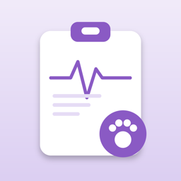

Una hoja de enfermería para la mascota que estás cuidando
En desarrollo
Cuando una mascota está enferma, cada día se vuelve una lista: pastillas a las ocho, suero a las siete, calentar la cama, pesarla el domingo, contar los grumos de arena. Y cada visita al veterinario empieza con la misma pregunta: "¿cómo ha estado?". PawChart guarda la lista y la respuesta en un solo lugar.
Dile a PawChart qué está tratando tu veterinario (hipertiroidismo, enfermedad renal, temperatura corporal baja, diabetes, enfermedad cardíaca, recuperación de una cirugía o cuidados paliativos para mascotas mayores) y te sugiere la lista diaria que escribiría un veterinario. Agrega el nombre, la dosis y la vía de cada medicamento, pon los horarios y marca cada uno como hecho o rechazado.
En inglés y español.
Sin cuenta. Sin anuncios. Nada sale de tu teléfono a menos que lo envíes. PawChart es un diario de cuidados, no un veterinario: sigue siempre las indicaciones de tu veterinario.